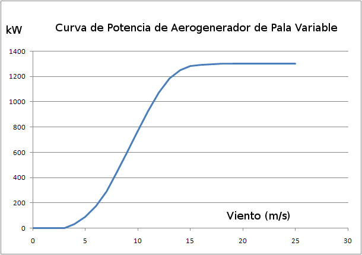

C'è un effetto noto come "stallo" che provoca una diminuzioneascensore, che fa ruotare le lame (vederePerché le lame ruotano?). Questo effetto si verifica quando un aereo aumenta l'angolo di attacco delle sue ali sopra un certo valore, come mostrato nel grafico seguente.
|
In questo caso, l'angolo delle ali provoca una forza verso l'alto per agire su di loro. Thevettore rossoindica la differenza tra questa forza verso l'alto e il peso dell'aereo.
|
Quando l'angolo è troppo grande, la forza verso l'alto è inferiore al peso dell'aereo, a causa dell'ala che entra in uno stallo. |
|
|
Quando l'angolo è piccolo, il flusso laminare intorno all'ala o la lama non è disturbato. |
|
|
Quando l'angolo supera un certo valore, il flusso laminare scompare dalle zone finali della lama, eturbolenzaappare, riducendo la superficie che contribuisce a sollevare e, quindi, la forza che "pulisce" la lama verso l'alto (sollevamento), rispetto al caso precedente. |
|
|
È anche possibileindurre la turbolenzacambiando la direzione dell'angolo di attacco. Questa tecnica viene utilizzata nella soluzione di controllo chiamata "Stallo attivo. Il vantaggio qui è che un angolo molto più piccolo è richiesto che nel caso precedente per entrare in stallo. |
Figura 1
La figura seguente mostra le curve corrispondenti all'evoluzione della forza di spinta verticale (sollevamento) e nella direzione del vento (trascinamento) come funzione di pitch. VediPerché le lame ruotano?per il rapporto tra queste forze e quelle che determinano le forze rotazionali delle lame e la spinta sulla torre.
Si può vedere che quando si entra in stallo, il comportamento cambia, in modo che un aumento del vento corrisponda ad una diminuzione delsollevamentoforza e quindi nella potenza ottenuta dal vento per ruotare il mozzo. Può anche essere visto nella curva rossa che quando entra in stallo, aumenta la forza che agisce sulla torre. In altre parole,inserire stalla implica ulteriori carichi sulla torre.
Fig. 2.
La figura seguente mostra la curva di potenza ottenuta dal vento perturbine eoliche fisse-pitch, dove si può vedere l'effetto di entrare stallo sul potere. In questi casi, la lama è progettata in modo che il livello del vento a cui si verifica lo stallo sia leggermente superiore alla velocità nominale del vento. Questorisposta passivaaiuta ilcontrollodella turbina eolica: cioè, aiuta a impedirne la filatura fuori controllo quando il vento aumenta in modo significativo.

Fig. 3.
La figura seguente mostra il risultato di utilizzare lo stallo con il "Stallo attivo" tecnica di controllo, in cui il passo viene utilizzato per "forzare" stallo con velocità del vento inferiori a quelle della lama stessa. In questa figura si possono vedere due aree:
a) nella zona del vento sotto la velocità nominale del vento (circa 12 m/s nel grafico), il campo è mantenuto a 0o, che corrisponde ad un massimo Cp (vediCoefficiente aerodinamico);
b) sopra la velocità nominale del vento, quando abbiamo bisogno di ridurre la potenza ottenuta dal vento, la lama è impostata ad un piccolo angolocontro il vento(segno negativo Pitch). Il valore assoluto di questo angolo diminuisce man mano che il vento aumenta, riflettendo lo stesso fenomeno di stalla visto in lame angolari fissi.
Fig. 4.
Applicando questo controllo del pitch, la caratteristica Potenza vs. Curva del vento in una turbina eolica controllata daStallo attivoè mostrato nella figura seguente.

Fig. 5.
Come si può vedere confrontando Figure 3 e 5, la produzione con vento sopra il vento nominale migliora significativamente nel caso di turbine eoliche con angolo di lancio variabile e il "Stall attivo"method.